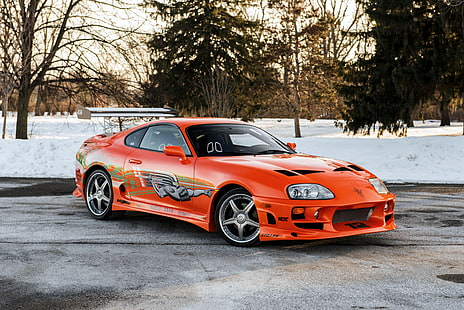
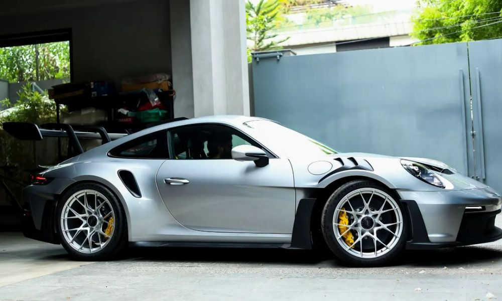

Bugatti Veyron

The Bugatti Veyron EB 16.4 is a mid-engine sports car, designed and developed in Germany by the Volkswagen Group and Bugatti and manufactured in Molsheim, France, by French automobile manufacturer Bugatti. It was named after the racing driver Pierre Veyron.
The original version has a top speed of 407 km/h (253 mph).[5][6] It was named the 2000s Car of the Decade by the BBC television programme Top Gear. The standard Veyron also won Top Gear's Best Car Driven All Year award in 2005.
Back to Top
Mclaren

The McLaren 720S is a sports car designed and manufactured by British automobile manufacturer McLaren Automotive. It is the second all-new car in the McLaren Super Series, replacing the 650S beginning in May 2017.
The 720S was launched at the Geneva Motor Show on 7 March 2017 and is built on a modified carbon monocoque, which is lighter and stiffer than the previous model, the 650S.
Back to Top
Supra MK4 OG
(Paul Walker Edition)

The fourth-generation Supra again shared its platform with the upscale Soarer coupe, sold in the US as the Lexus SC. Although the two cars looked similar dimension-wise, the new Supra was more than 13 inches (340 mm) shorter than its luxurious cousin.[34]
This redesign saw Toyota placing great emphasis on a more serious high-performance car. The A80 featured two new engines: a naturally aspirated Toyota 2JZ-GE having a power output of 164 kW (220 hp; 223 PS) at 5,800 rpm and 210 lb⋅ft (285 N⋅m) at 4,800 rpm of torque and a twin turbocharged Toyota 2JZ-GTE having a power output of 206 kW (276 hp; 280 PS) and 318 lb⋅ft (431 N⋅m) of torque for the Japanese model.The twin turbochargers operated in sequential mode instead of parallel. Initially, all of the exhaust gases are routed to the first turbine for reduced lag. This resulted in boost and enhanced torque as early as 1,800 rpm, where it already produced 300 lb⋅ft (407 N⋅m) of torque. At 3,500 rpm, some of the exhaust gases are routed to the second turbine for a "pre-boost" mode, although none of the compressor output is used by the engine at this point. At 4,000 rpm, the second turbo's output is used to augment the first turbo's output. Compared to the parallel mode, sequential mode turbochargers provide quicker low RPM response and increased high RPM boost. This high RPM boost was also aided with technology originally present in the 7M-GE in the form of the Acoustic Control Induction System (ACIS) which is a way of managing the air compression pulses within the intake piping as to increase power.
Back to Top
Porsche 911 GT3 RS

The Porsche 911 GT3 is a high-performance homologation model of the Porsche 911 sports car. It is a line of high-performance models, which began with the 1973 911 Carrera RS. The GT3 has had a successful racing career in the one-make national and regional Porsche Carrera Cup and GT3 Cup Challenge series, as well as the international Porsche Supercup supporting the FIA F1 World Championship.
Back to Top